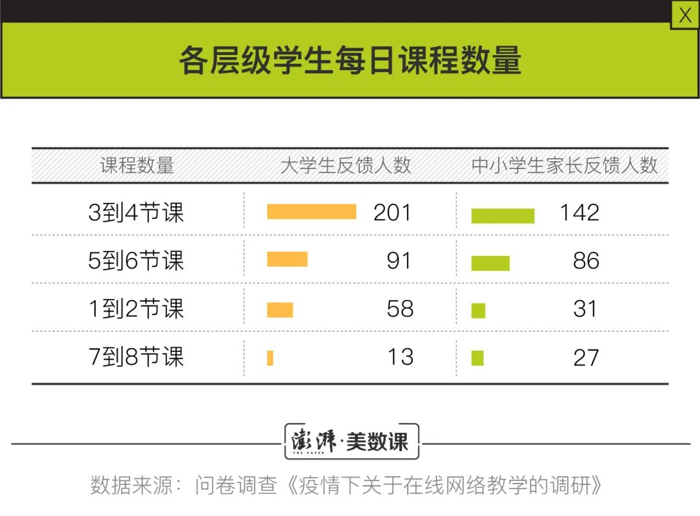
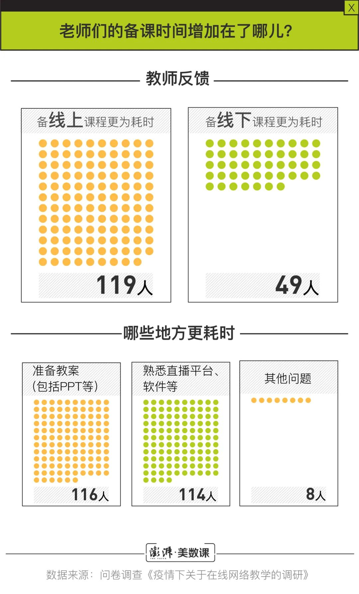

上海中小学3月2日起在线教育，到底怎么上？
原文链接 备份链接 澎湃新闻记者 栾晓娜 2020年2月18日下午2:00，上海举行新闻发布会，邀请市教委主任陆靖，上海交通大学常务副校长、中国科学院院士丁奎岭，市卫生健康委新闻发言人郑锦，长宁区绿苑小学校长王晶介绍上海新冠肺炎疫情防控 …
澎湃新闻记者 张轶君 蔡琳
从年前到年后，阿里旗下办公软件“钉钉”的下载量经历了过山车一般起伏。
作为一款企业移动办公应用，钉钉年前平日下载量滑动在苹果App Store总榜五十名到二十名之间。然而让人意想不到的是，节后2月4日，钉钉登上了App Store下载榜之首，并且连续“霸榜”至今近一月。
可能钉钉的开发者们都没有想到，除了登上榜首，目前钉钉还收获了超过82万条的1星差评。1星差评里，充斥了无数学生对悠长寒假生活被无情剥夺的不满与怨憎。

2月10日左右，钉钉负评开始暴增。这一天，正是不少地区中小学校开始在线网课教学的时间。除了在软件商店平台上打差评，“学生党”们在B站上制作恶搞视频，发泄不满情绪。
网课的进行，源于教育部“停课不停学”政策。疫情期间，各地中小学与高校纷纷颁布通知，延迟正式返校开学的时间；上在线直播网课，成为了众多学校的选择之一。
目前线上教学实际执行情况如何？牢骚和恶搞背后，隐藏着学生、老师、家长们怎样的真实看法？基于这些问题，澎湃新闻（www.thepaper.cn）制作了线上问卷*，问卷使用Credamo平台发放，调研了近千名各个层次的学生、家长和老师，尝试勾勒出这次大规模线上教学的大致效果。
**01
**
“停课不停学”，政策初衷到底为何？
2月27日，中央应对新冠肺炎疫情工作领导小组会议强调，大中小学、幼儿园等开学开园时间原则上继续推迟。截至2月28日，全国除贵州省高三、初三外，其他省的正式返校开学时间仍未有明确日期通告；然而，已有众多省市教育部门开展部署线上教学工作。

澎湃新闻在问卷调查中发现，2月26日，超过90%的大学生、老师、中小学生家长受访者都表示线上教学活动已开始进行。绝大部分学生接受课程的方式都包括参与在线直播课程，三分之二左右的中小学生家长表示孩子已开始上义务教育阶段新课。
“大规模在线直播课堂，是40年来人类教育历史上最大规模的实验。”北京大学教授刘德寰在自己的个人公众号上，对目前线上教育有如此评价。然而仔细梳理教育部近期的发布政策来看，“停课不停学”既不意味着强求所有教师出镜，单纯地在线直播授课；也不意味着提前上新课。

2月5日，教育部发布通知表示“中小学校在各地原计划的正式开学日之前，不提前开始新学期课程网上教学”，不少地区受此通知做出了响应，规定了中小学正式开学前不开展新课教学。关于各级大学生网络授课的情况，教育部仅表示“保证教学进度和教学质量”。
对于中小学校来说，教育部最早发布政策“初衷”，是希望即使线上教学，各级中小学校能利用上“国家网络云课堂”等现有资源来进行教学。而对于无网络或网速慢的农村偏远地区，教育部将安排中国教育电视台播出有关课程和资源，解决这些地区学生在家学习问题。
现实情况下，农村地区落实“停课不停学”措施仍然困难重重。2月14日，澎湃新闻曾报道湖北宜昌的一位初一女孩回深山老家过年，学校通知网上开课，但大山深处网络信号不稳定；于是女孩的爷爷在山上信号稳定的地方用竹竿和油布为她搭了个“山中课堂”。对此，四川在线评论到，农村地区如何解答好“停课不停学”问题，显然需要各方更加认真对待。
**02
**
钉钉和腾讯课堂是调查中使用最广的平台

目前各省市教育部门、各大学的在线授课计划里提及了许多在线教学平台。大学的指定教学平台很多包括超星学习通、雨课堂、中国大学MOOC等。中小学教学平台多包括本地的有线电视/IPTV，以及各类国家级（如“国家网络云课堂”）、省级教学平台。
大部分“停课不停学”方案中，都未提及使用钉钉、微信、QQ等社交通讯与办公软件来授课。问卷统计显示，不管是教育部门，还是各个大学的指定教学平台，流行程度不及市场化互联网公司软件。
调查过程中，记者了解到由于网络缘故，不少老师有指定教学平台外的平台备用方案，这通常是由于学校指定教学平台（如超星学习通、雨课堂）卡顿崩溃，只好转换使用其他更加稳定的平台所导致的；大学推行使用雨课堂等平台，多因为平台能在线督导老师上课情况。
**03
**
授课时间减少，大部分老师备课时间有增无减


目前大、中、小学生的上课时间、频率都有明显减少。问卷统计显示，多数中小学生每日接受课程的时长集中在2-3小时之间，大学生每日接受课程的时长集中在2-4小时之间。大部分学生每日仅在网上上3-4节课。
目前多地教育部门，也明确规定了中小学生接受网课时间的最高时限。如重庆市颁布的方案中规定，中小学网上教学原则上采取半日授课制度，时间每天不得超过4个学时，每课时教师讲授时间小学不得超过15分钟，中学不得超过20分钟。
学生们看似轻松了，71%接受问卷调查的老师却认为，线上备课比线下备课更加费时。许多老师都认为上课前教案的准备以及熟悉直播平台、硬件等事宜会增长他们备课的时间。
**04
**
平台卡顿外，沟通互动更成线上授课短板

近期，舆情持续热议“线上教学平台崩溃”这一现象。然而通过问卷调查发现，平台卡顿、崩溃并不是学生和教师们在线上教学中遇到的最大问题。
无论是学生和老师，各方在调查问卷中反映的共同突出问题是在线教育过程中沟通互动环节无法得到保障。“上课比较痛苦的是看不到学生的表情、反馈，就是独角戏。”一位老师对澎湃新闻记者这样反馈到。
在线教学中扮演不同角色的各方，所遇到的问题也不一样。在中小学生家长眼里看来，更加担心他们的孩子容易近视、容易疲劳、容易从心理上厌倦网络教学课程；而教师们担心的最大问题，是“无法有效监督学生课上、课下作业完成情况”。
**05
**
中小学生家长与教师对线上教育接受度较低

从问卷结果来看，大学生对线上教育的接受度较高。
中小学生和各层级老师的接受程度稍低一些，他们更希望能够早日恢复线下教学。也有很大一部分被调查者认为，在线教育是一个“非常好的学习模式”。
被调查大学生在自评自己接受在线教育的效果时，超过三分之二的被调查者自认为“在线教育”效果非常之好，仅有近5%的被调查者认为在线教育效果“较差”或“很差”。
然而在访谈中，一些大学教师表达了他们对在线教育效果的担心，除了无法与学生们进行有效的沟通之外；“不知道学生们是否课后提交的线上作业，是否存在互相抄袭的情况，也不知道电脑的另一端的摄像头前，端坐着的学生们真的是在认真听课吗？”
*注：
1.问卷于2月26日午间发放，2月26日晚间回收完毕。经过筛选共得到来自全国各地共858份涵盖大学生、中小学生家长、各层级老师的问卷，问卷回收率为95.3%（问卷最初向大学生投递400份、中小学生家长投递300份、各层级老师投递200份）。本文的遗憾仍然在于样本数量较为少，最终所得结果仅供参考。
2.三份调查问卷链接：
针对老师的问卷：https://www.credamo.com/answer.html#/s/1uy
针对中小学生家长的问卷：https://www.credamo.com/answer.html#/s/1uu
针对大学生的问卷：https://www.credamo.com/answer.html#/s/1ui
本期编辑 周玉华
推荐阅读


原文链接 备份链接 澎湃新闻记者 栾晓娜 2020年2月18日下午2:00，上海举行新闻发布会，邀请市教委主任陆靖，上海交通大学常务副校长、中国科学院院士丁奎岭，市卫生健康委新闻发言人郑锦，长宁区绿苑小学校长王晶介绍上海新冠肺炎疫情防控 …
原文链接 备份链接 “有一次我突击去检查孩子的网课情况，发现她网课是在播放，但是电脑桌面当前窗口显示的却是她的QQ群，原来一群同学正聊得欢。” 记者|王晓珊 编辑| 盛倩玉 小豆 实习生| 甘笠男 刘苗苗 龚纾绮 “咋出来的不是云课堂？难 …
原文链接 备份链接 为什么这次在线教育又火了？ “到了2020年，老师和学生都不用去学校了，在家里就能上课”。这是2000年梦想杯作文大赛特等奖节选中的一句话，没想到在二十年后的今天却由于新冠肺炎疫情影响而变成了现实。 近年来在线教育被社 …
原文链接 备份链接 疫情虽险，学习不止。希望当下“直播上课”的情景，只是未来成功学子们回忆中一个有趣的插曲。 “刚才那题答对的刷个666”，女老师在直播间里喊着，屏幕上也随之刷满了来自学生们的“666”。这是今天的直播平台里，一场普通 …
原文链接 备份链接 经济观察网 记者 李静 实习记者 刘兰 受到疫情影响，近期多地学校采用“线上授课”的方式响应教育部疫情期间学校“停课不停学”行动。这一行动，牵扯众多，也包括正在复习冲刺阶段的高三备考生们。 疫情对于教学工作、班级管理影 …